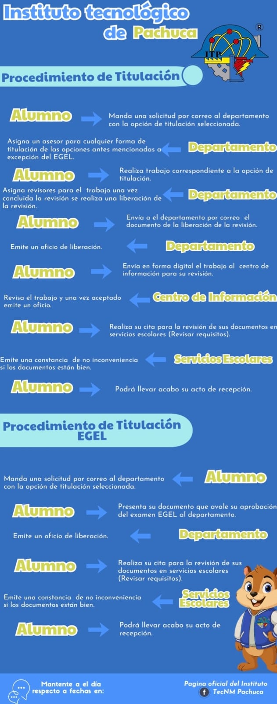

Titulación
Conoce las modalidades de titulación, el procedimiento institucional y los recursos necesarios para obtener tu título profesional como Ingeniero Industrial.
Conoce las modalidades de titulación, el procedimiento institucional y los recursos necesarios para obtener tu título profesional como Ingeniero Industrial.


La titulación profesional es el proceso mediante el cual el egresado obtiene el título que acredita oficialmente la conclusión de sus estudios de nivel superior.
Este trámite valida las competencias adquiridas durante la carrera y permite el ejercicio legal de la profesión, así como el acceso a mejores oportunidades laborales y de desarrollo académico.
Revisa las modalidades de titulación y asegúrate de cumplir con los requisitos establecidos por el Instituto Tecnológico de Pachuca.
Conoce las modalidades disponibles para obtener tu título profesional.
Prepara la documentación requerida para el acto protocolario y el trámite institucional.
Consulta los requisitos y el procedimiento para presentar tu acto recepcional.
Obtén el documento que acredita oficialmente tu formación como Ingeniero Industrial.

Consulta los requisitos para el acto protocolario, formatos, fechas y el procedimiento oficial para realizar tu titulación.
Si deseas continuar tu formación de posgrado, estas convocatorias pueden ayudarte a financiar tus estudios y proyectos de investigación.

Apoyos para estudios de maestría, movilidad académica y estancias de investigación, incluyendo colegiatura, manutención y otros apoyos según la convocatoria vigente.
Información completa
Programas de apoyo para estudiantes de posgrado registrados en el Sistema Nacional de Posgrados, orientados a cubrir gastos de manutención durante los estudios de maestría.
Consultar convocatoriasConcluye tu proceso de titulación con una adecuada planeación y aprovecha las oportunidades de posgrado para continuar fortaleciendo tu desarrollo profesional y académico.